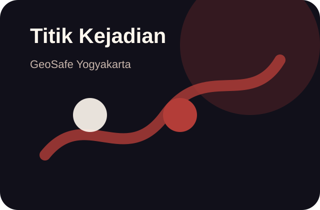
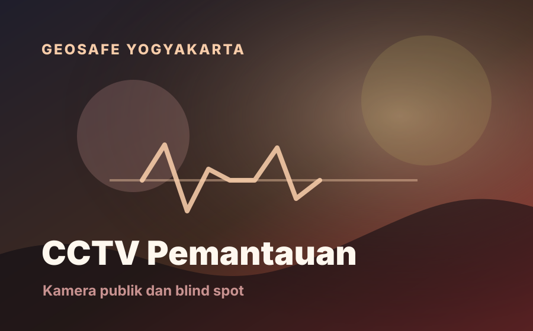
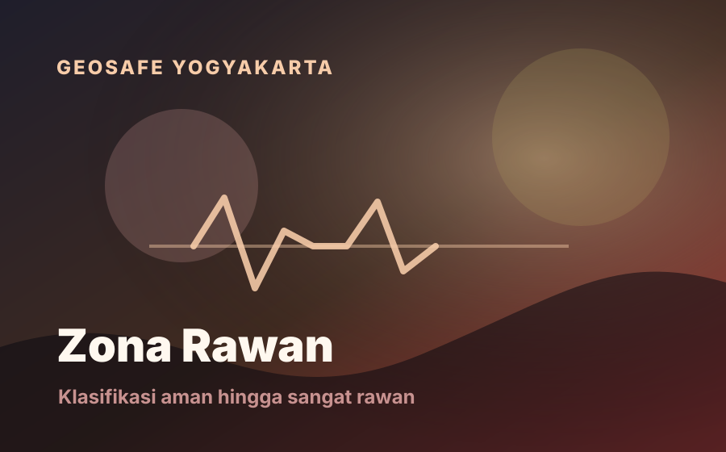
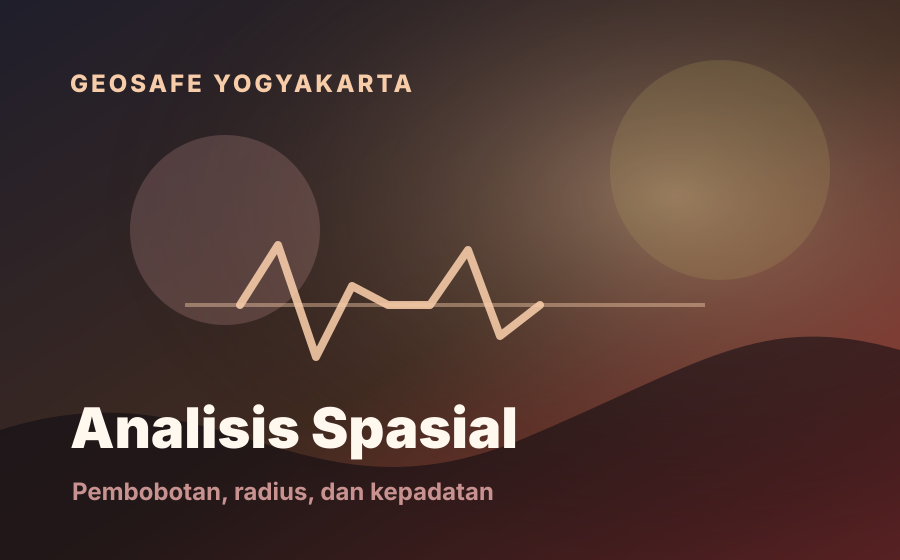
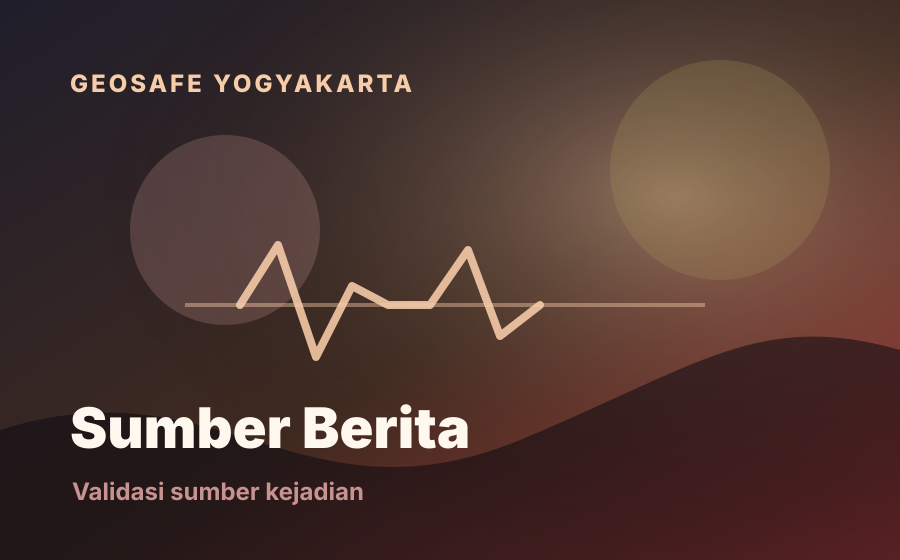
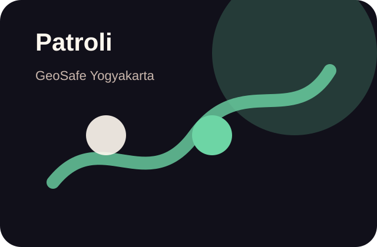

🗺️
Peta Kerawanan
Menampilkan zona, kejadian, CCTV, PJU/prioritas penerangan, batas administrasi, dan koridor rawan.
Buka Peta
WebGIS ini dibuat untuk membantu pengguna melihat zona rawan, titik kejadian, CCTV Kota Yogyakarta, PJU/prioritas penerangan, dan galeri berita dalam satu alur yang mudah dipakai.
Bagian utama web dibuat lebih singkat supaya pengguna langsung memahami apa yang bisa dilakukan: membuka peta, membaca analisis, mengecek CCTV/PJU, dan melihat galeri berita.
Tujuannya bukan sekadar menampilkan titik, tetapi membantu pengguna memahami wilayah yang perlu dipantau, titik yang berpotensi blind spot CCTV, dan sumber berita yang perlu divalidasi.
Menampilkan zona, kejadian, CCTV, PJU/prioritas penerangan, batas administrasi, dan koridor rawan.
Titik kejadian dikaitkan dengan zona, CCTV terdekat, sumber berita, dan status cakupan 500 meter.
CCTV dibatasi ke Kota Yogyakarta dan dipakai untuk indikator cakupan radius 500 meter.
Berita ditampilkan seperti galeri kartu dari data kejadian, bukan daftar monoton.
Kartu visual membantu pengguna memahami fungsi peta, analisis, berita, CCTV, PJU, dan rekomendasi tanpa teks teknis yang panjang.

Konteks persebaran kejadian yang dianalisis.

Menjelaskan peran kamera publik dan potensi blind spot.

Menampilkan klasifikasi wilayah dan prioritas intervensi.

Menghubungkan titik kejadian, radius CCTV, dan batas wilayah.

Membantu membuka sumber asli dan menilai konteks kejadian.

Arahan awal untuk patroli dan verifikasi lapangan.